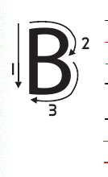
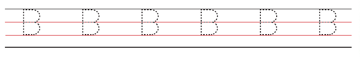
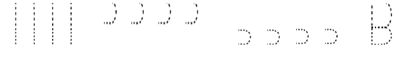

Unit Five - Writing or finger spelling consonant letters in uppercase - Lesson 1: Letter B
Unit Five
Writing or finger spelling consonant letters in uppercase
Lesson 1
Letter B
Trace the uppercase letter B or write dot six, then dot one and dot two.


